Retour exposition : Cahors Bricks Expo 2024
Décembre 2024. Il est temps pour nous de quitter notre LEGO room.
Avec ce camion chargé, nous étions prêts ! Direction le Sud de la France, en Occitanie. Nous nous dirigeons vers Toulouse pour atteindre une commune appelée Cahors. Car c'est bien là que nous avons présenté le Brick Winter Burrow à un public pour la deuxième fois.
Revue de cette expérience inoubliable qu'a été la Cahors Bricks Expo 2024 !
{kind=link}
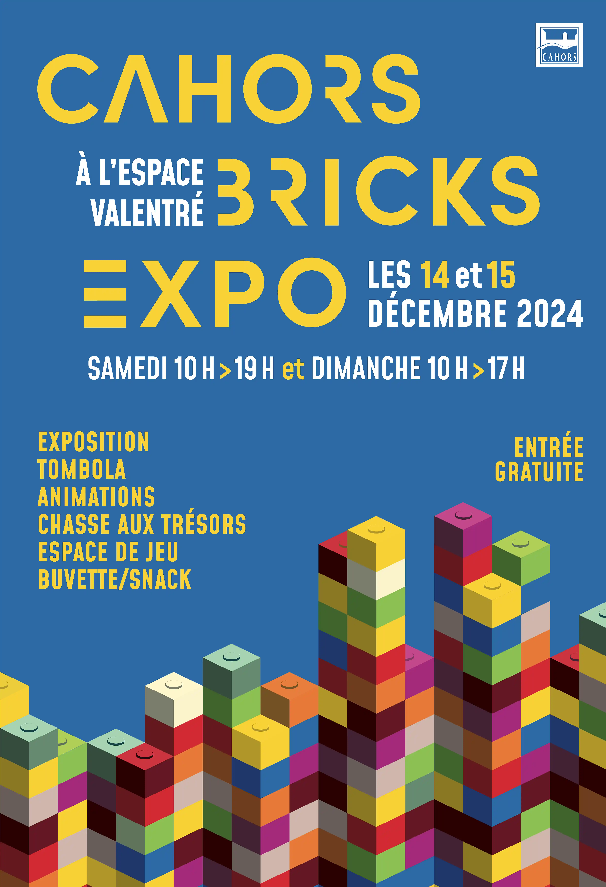
Deuxième volet
On reprend les mêmes ?
Nous sommes en 2024 et nous faisons toujours partie de l'association Brick Team Aquitaine que nous avons rejoint l'année passée (cf. article "Nous rejoignons la Brick Team Aquitaine"). Nous sommes toujours autant ravis d'être au sein d'une communauté unie par le même amour pour la brique.
Au-delà des astuces et du partage de bons tuyaux, nous avons été marqués par notre première exposition à Champniers qui fut, sans l'ombre d'un doute, un moment inoubliable (cf. article "Retour exposition : Des Briques pour le Téléthon 2023").
Nous voulions renouveler cette expérience !
{kind=link}
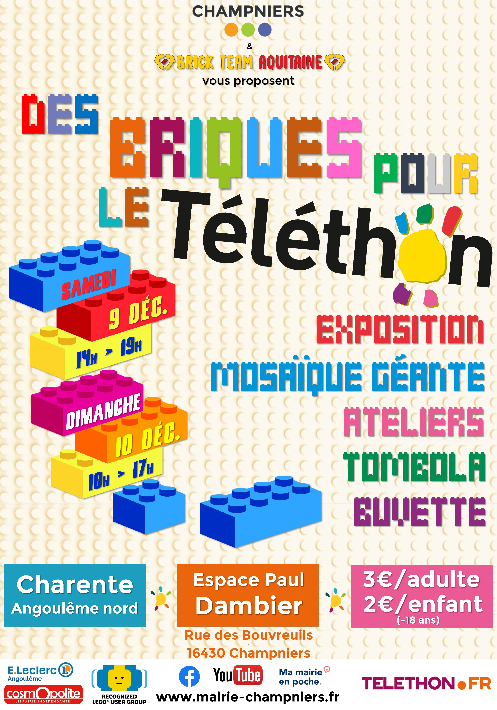
Au fil des mois, nous prenions des nouvelles au sein de la Brick Team Aquitaine pour connaître les évènements de fin d'année. Nous n'étions effectivement pas certains qu'une deuxième édition de l'exposition "Des Briques pour le Téléthon"1 allait se produire.
Néanmoins, nous étions confiants pour plusieurs raisons.
Noble cause
D'abord, le Téléthon est avant tout un événement caritatif visant à financer des projets de recherche sur les maladies génétiques neuromusculaires, comme la myopathie, ainsi que sur d'autres maladies qui peuvent être rares et/ou gravement invalidantes2.
Ce marathon télévisuel est aussi annuel, et ce, depuis 19873.
{kind=link}
Avec un objectif si noble et une telle longévité, il nous était difficile d'imaginer que 2024 serait l'année qui sonnerait son arrêt.
Articles de presse enthousiastes
Ensuite, un autre point positif pour l'exposition "Des Briques pour le Téléthon 2023"1 est qu'elle fut un grand succès !
En décembre 2023, le quotidien Charente Libre avait effectivement relayé deux articles élogieux4,5 intitulés "Champniers : la grosse expo LEGO va renaître à l'espace Dambier ce week-end" et "Téléthon : Vers un très bon cru 2023".
L'auteur, Nicolas Guiraud, avait d'ailleurs remis le couvert fin 2024 avec deux nouvelles publications6,7 intitulées "Seigneur des Anneaux, Star Wars, Harry Potter : 800 m² de constructions LEGO à admirer à Champniers" et "Champniers : Les LEGO, vedettes du Téléthon".
{kind=link}
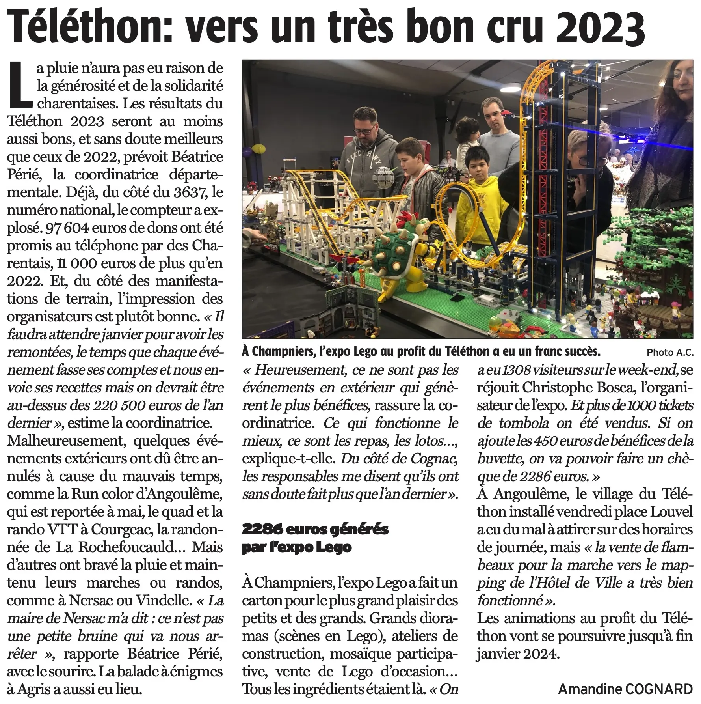
{kind=link}
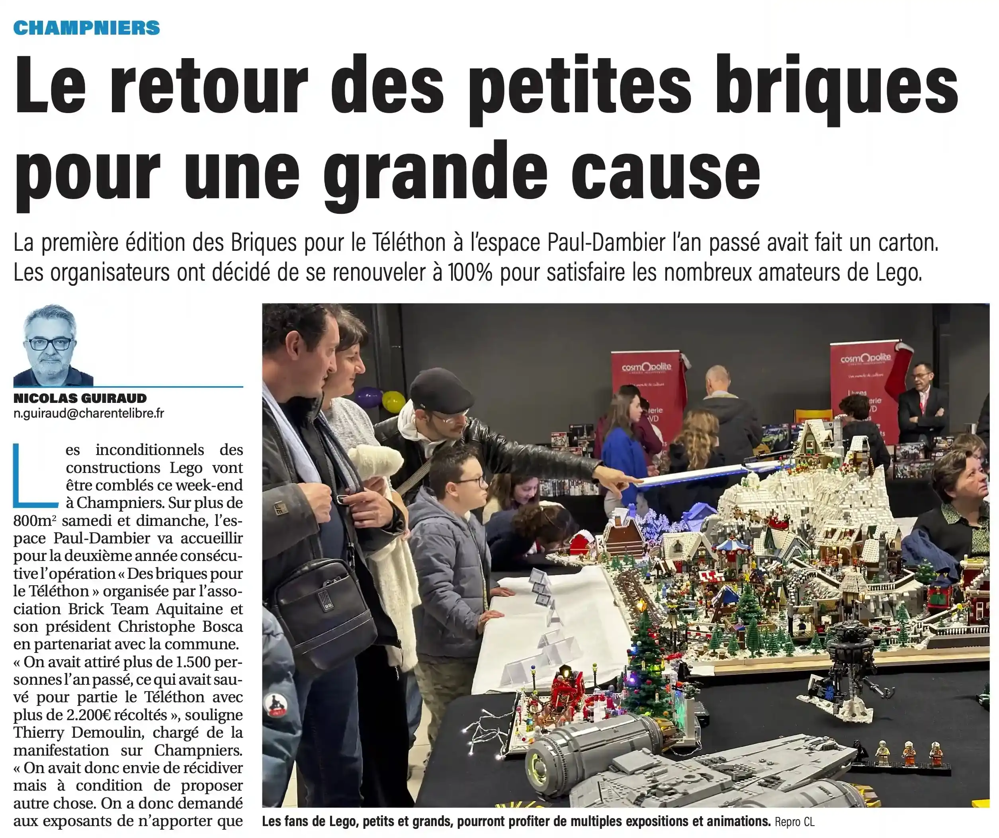
À y regarder de plus près, on pouvait même apercevoir le Brick Winter Burrow en couverture. Cette image fut d'ailleurs reprise pour un autre article de ce quotidien en version papier intitulé "Le retour des petites briques pour une grande cause" !
Bonne nouvelle gâchée
Nous étions donc impatients de participer à un volume II.
La nouvelle tomba en septembre ; il y aura bien une deuxième édition de l'exposition "Des Briques pour le Téléthon"8. Nous en étions ravis !
Malheureusement, un souci de calendrier de dernière minute nous empêcha de valider notre participation à cet évènement. Aussi, la Brick Team Aquitaine souhaitait - à juste titre - renouveler certains dioramas. Même si nous avions fait quelques ajustements sur le nôtre, de par leur nature, ces derniers auraient pu paraître invisibles aux yeux du public (cf. chapitre "Distance avec les briques" de la partie "Histoire du Terrier"). Nous voulions à tout prix éviter un sentiment de lassitude pour les visiteurs.
Nous savions donc fin septembre que nous ne revisiterions pas la ville de Champniers en 2024. Nous avons pu cependant nous consoler en rendant visite aux membres de l'association à l'exposition "L'expo Super Géniale"9.
{kind=link}
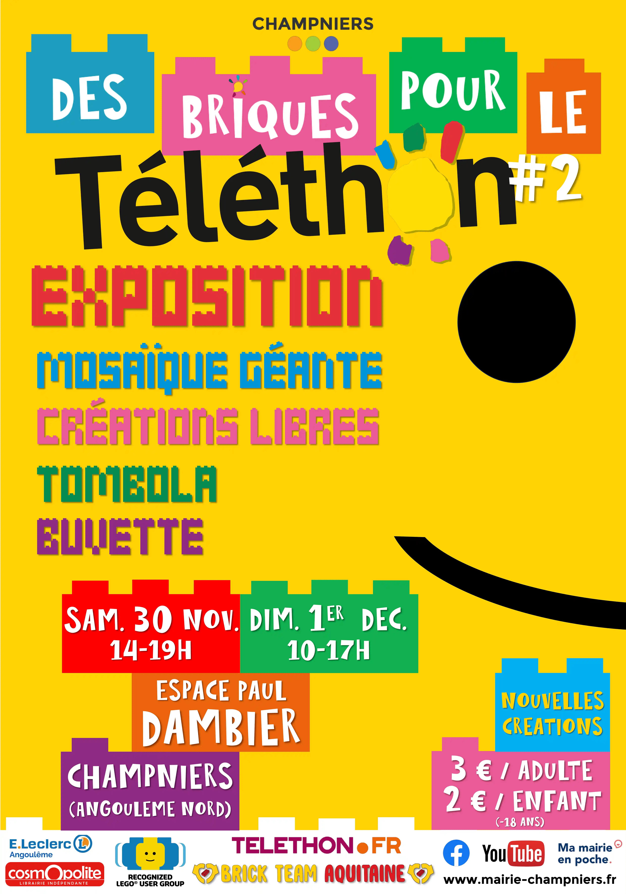
{kind=link}
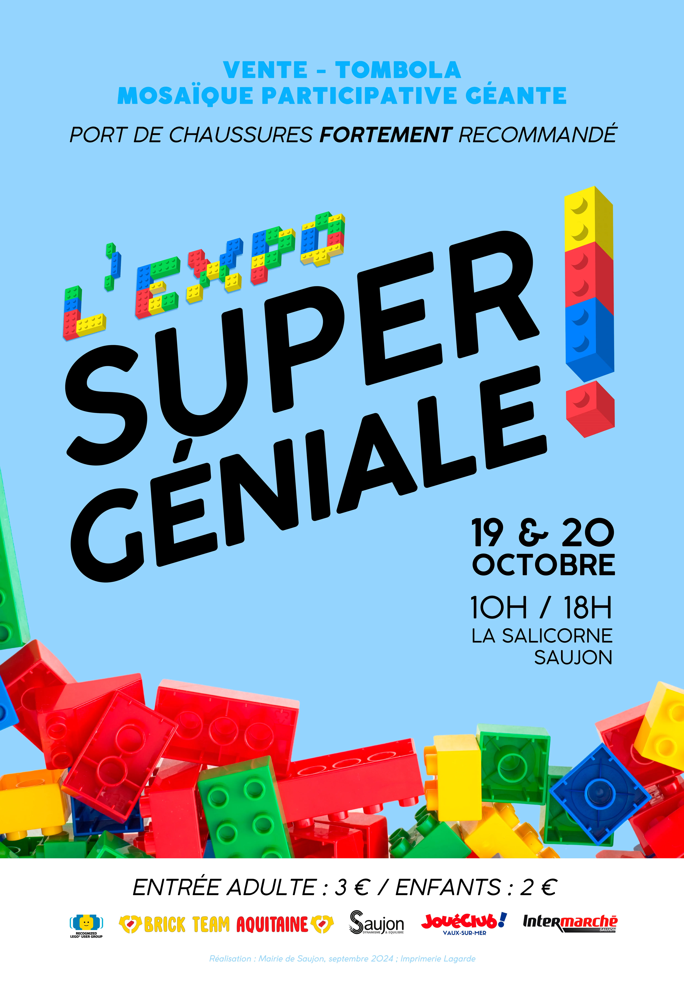
Cette dernière s'est déroulée en octobre et fût couronnée de succès10,11. Après presque 1 an sans avoir revu nos amis de la Brick Team Aquitaine, quel plaisir de se retrouver entourés de nouvelles créations magnifiques !
{kind=link}
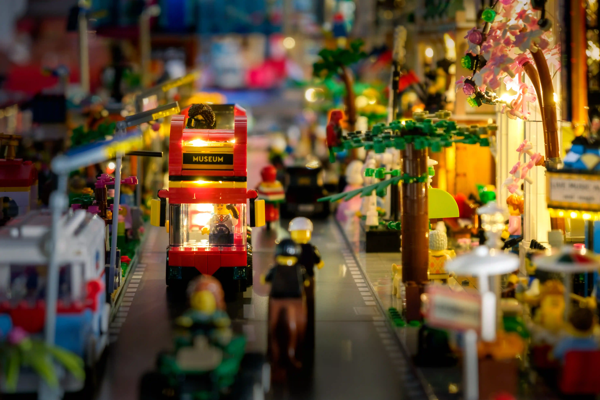
{kind=link}
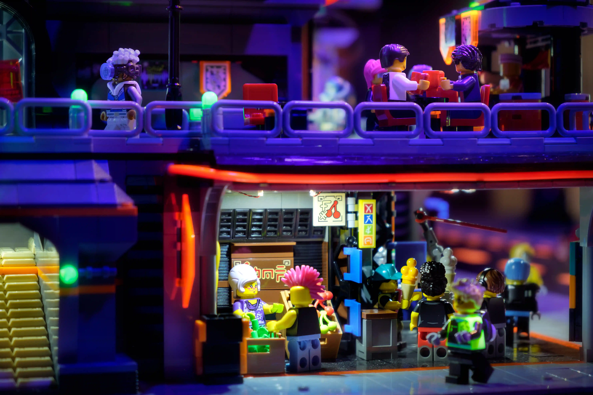
Si une nouvelle édition se présente en 2025, nous pensons d'ailleurs candidater pour avoir un stand en tant qu'exposants !
Cahors, nous voilà !
Ne pouvant pas nous rendre à Champniers pour toutes les raisons évoquées, il ne nous restait qu'une option si nous souhaitions exposer en cette fin d'année ; la "Cahors Bricks Expo 2024"12.
Cadurcien expérimenté
Depuis sa création, cet évènement est organisé par Rémi Basso. Membre de la Brick Team Aquitaine depuis déjà quelques années13, cet AFOL Cadurcien n'en est pas à son premier coup d'essai14,15,16,17.
En effet, la "Cahors Bricks Expo" a déjà connu deux éditions précédentes18,19.
Qu'il s'agisse de la "Cahors Bricks Expo 2022"18 ou la "Cahors Bricks Expo 2023"19, ces deux évènements furent populaires avec pas moins de 3 500 visiteurs à chaque édition20,21,22,23 !
{kind=link}
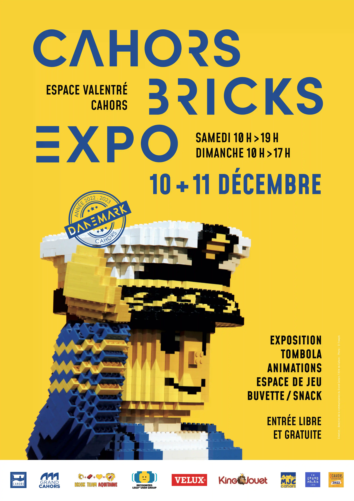
{kind=link}
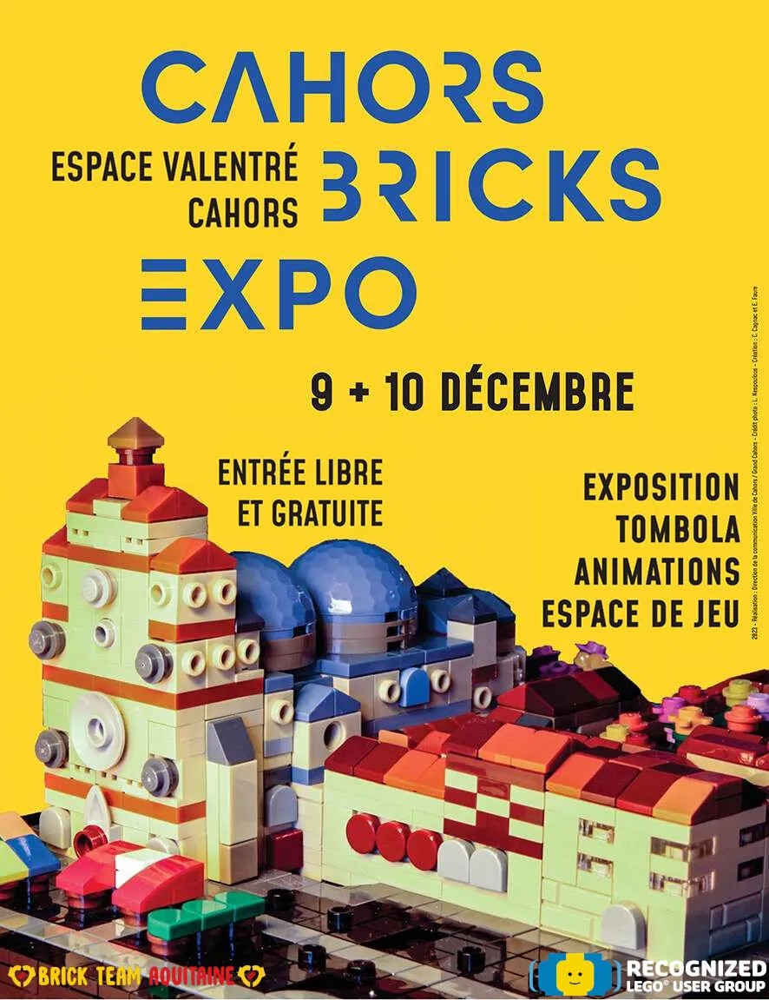
Aide au Centre Hospitalier
En effectuant quelques recherches supplémentaires sur cet évènement, nous avions également constaté que, comme le faisaient très bien "Des Briques pour le Téléthon 2023"1 et "Des Briques pour le Téléthon 2024"8 avec le Téléthon, les éditions de la "Cahors Bricks Expo" avaient elles aussi une dimension caritative.
En 2022, la Brick Team Aquitaine avait effectivement organisé une tombola. Une partie des bénéfices avait ensuite été versée au service de pédiatrie du Centre Hospitalier de Cahors afin qu'il puisse se doter de boîtes LEGO et DUPLO24. Ce geste généreux envers ces enfants malades fût renouvelé en 202325.
Nous étions d'autant moins surpris de voir la Mairie de Cahors et la presse locale annoncer fièrement la troisième édition de cet évènement26,27,28,29 !
{kind=link}
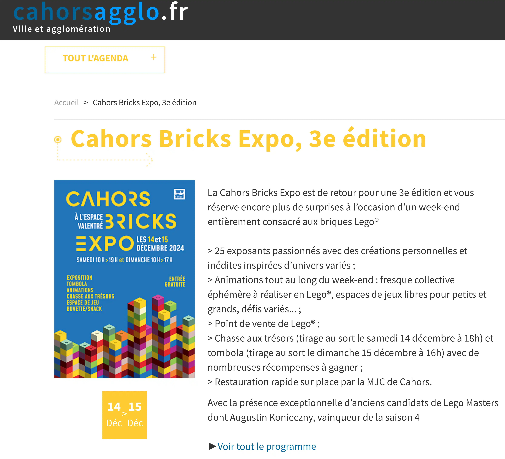
Nous apprendrons plus tard que pour l'édition 2024 de cet évènement, les recettes de la tombola organisée durant le weekend seraient reversées au Secours Populaire Français.
En camion
Mais où se trouve la ville de Cahors ? Peut-être aurions-nous dû commencer par-là avant de nous proposer en tant qu'exposants ! Mais quand la folie des LEGO vous tient...
Contrairement à Champniers qui est localisée à côté d'Angoulême dans la région de la Nouvelle-Aquitaine, Cahors est quant à elle une commune qui se trouve en Occitanie, à 1 heure et demie de route environ de Toulouse.
Le trajet était donc bien plus long que celui de notre première exposition.
Plutôt que de prendre deux voitures comme nous l'avions fait l'année passée (cf. article "Retour exposition : Des Briques pour le Téléthon 2023"), nous avons cette fois-ci choisi de louer un camion le temps du weekend.
{kind=link}
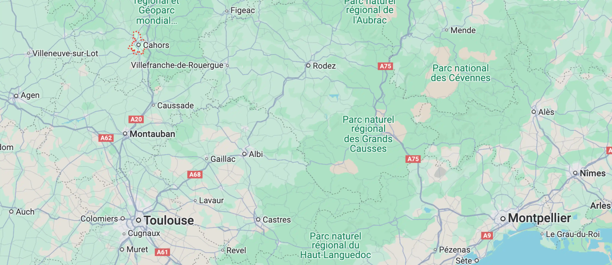
{kind=link}
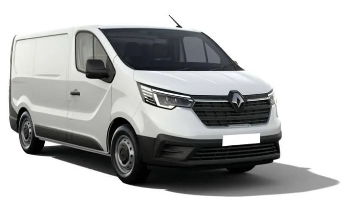
Le plan allait se dérouler ainsi :
- Vendredi 13 décembre : Départ de l'agence de location de camions au matin pour une arrivée à l'Espace Valentré aux alentours de 14h00, puis installation du Brick Winter Burrow.
- Samedi 14 décembre : Accueil des visiteurs et animation du stand de 10h00 à 19h00.
- Dimanche 15 décembre : Accueil des visiteurs et animation du stand de 10h00 à 17h00, puis trajet de retour.
Du nouveau ?
Une fois le plan mis sur papier, nous nous sommes attelés à la tâche de fignoler notre diorama. Nous l'évoquions quelques lignes plus haut, nous n'avions pas de grandes nouveautés visuelles à présenter aux visiteurs.
Nous n'étions cependant pas restés les bras croisés et avions réussi à améliorer le Brick Winter Burrow au cours de l'année.
Conversion au système 9V
La première modification se fit au niveau de notre train. Avec le tunnel, il s'agit effectivement de l'une de nos plus belles attractions et de la seule étant motorisée. Après "Des Briques pour le Téléthon 2023"1, nous étions convaincus, face à son succès, que notre train était un immense atout pour les visiteurs.
À nos débuts, nous utilisions le système Power Functions que nous avons remplacé quelques années plus tard par le système Powered UP (cf. chapitres "Version 2020" et "Version 2022" de la partie "Histoire du Terrier").
Pourquoi donc retourner au système 9V datant de 199130 ? Car les alternatives Power Functions et Powered UP, bien que pratiques, sont très gourmandes en piles.
{kind=link}
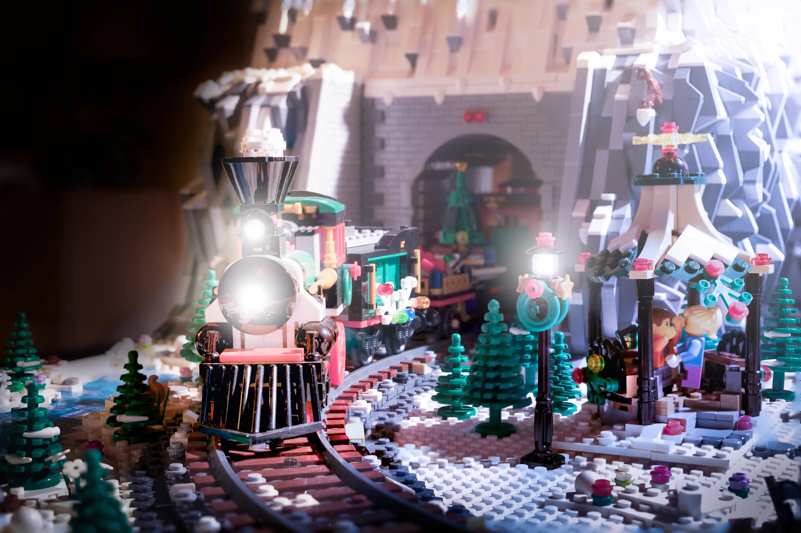
Comme l'évoquent certains internautes31,32, l'alimentation par secteur est le gros avantage du système 9V, ce qui représente un atout certain, notamment pour des AFOLs comme nous qui devons faire tourner un train pendant des heures d'affilée sans interruption. Le fait de ne plus à se préoccuper de la consommation des piles, que ce soit celles placées dans le moteur ou dans la télécommande est un soulagement.
Il nous a donc fallu reconstruire la totalité de nos ballastes sur des rails métalliques, mais aussi investir dans un moteur, la pièce "Electric, Train Motor 9V with Wheels" (Réf. 590) pour être précis, sans oublier l'indispensable "Electric, Train Track Contacts with Wire and 2 x 2 x ⅔ Brick" (Réf. 5306c01).
{kind=link}
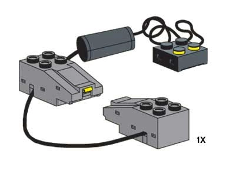
{kind=link}
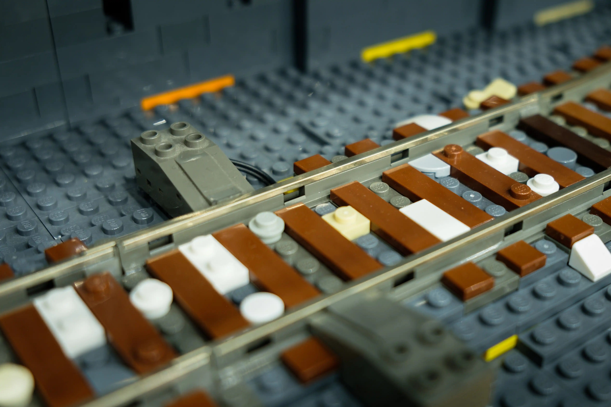
Et la lumière fut
Toujours du côté électrique, nous avions souhaité après l'exposition "Des Briques pour le Téléthon 2023"1 illuminer notre marché. Cela ne fut pas une étape simple.
Il y aurait énormément à dire sur ce processus. Nous détaillons d'ailleurs plus en détails l'électrification de notre Terrier dans le chapitre "Distance avec les briques" de la partie "Histoire du Terrier".
Malgré quelques sueurs froides, nous sommes parvenus à avoir un village illuminé pour la "Cahors Bricks Expo 2024"12.
{kind=link}
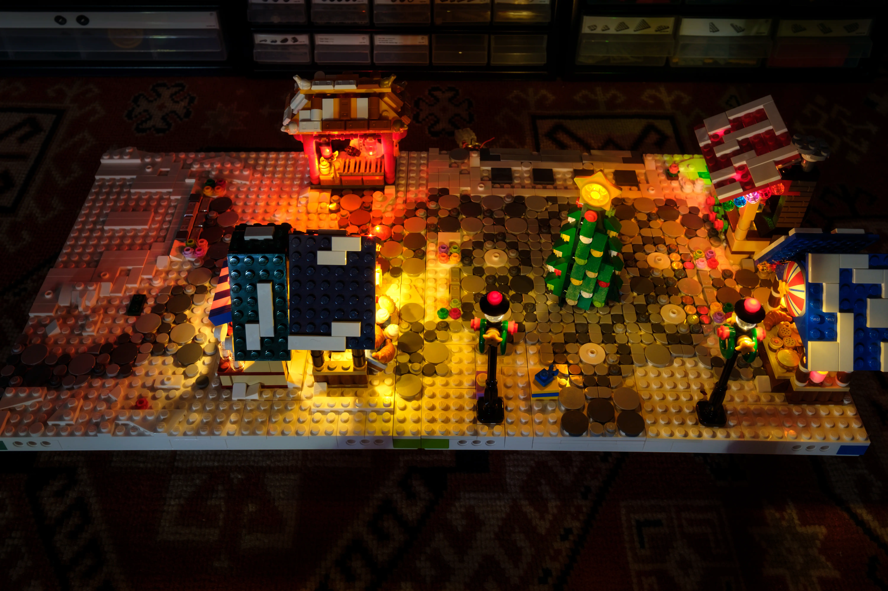
{kind=link}
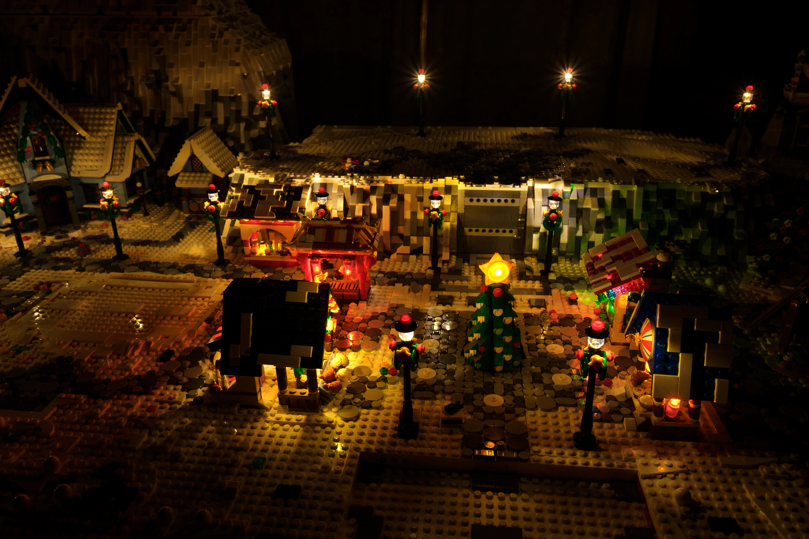
Un jeu de minifigs
Parmi les nouveautés pour cette année, nous tenions à créer un petit jeu de minifigs à dénicher dans notre village.
Sur les nouveaux personnages que nous avions acquis au cours de l'année, nous trouvions amusant que les visiteurs dénichent les petites figurines LEGO suivantes :
- Le "Fairy Batman" (Minifig
coltlbm03) de la "The LEGO Batman Movie Series" - Le "Grandma Visitor" (Minifig
col112) de la "Series 7 Minifigures" - Le "Penguin Boy" (Minifig
col253) de la "Series 16 Minifigures" - Le "Reindeer Costume" (Minifig
col401) de la "Series 23 Minifigures"
Fait aussi amusant qu'intéressant, la Mairie de Cahors avait préparé une chasse aux minifigs similaires en plaçant aléatoirement 5 minifigs dans les vitrines des magasins de la ville.
{kind=link}
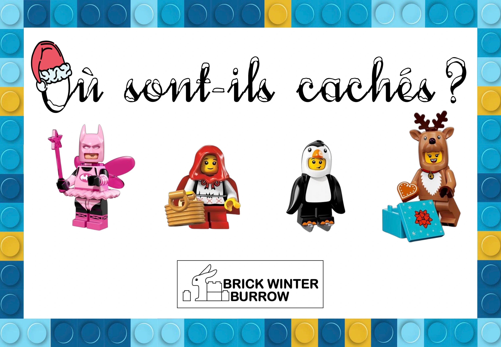
{kind=link}
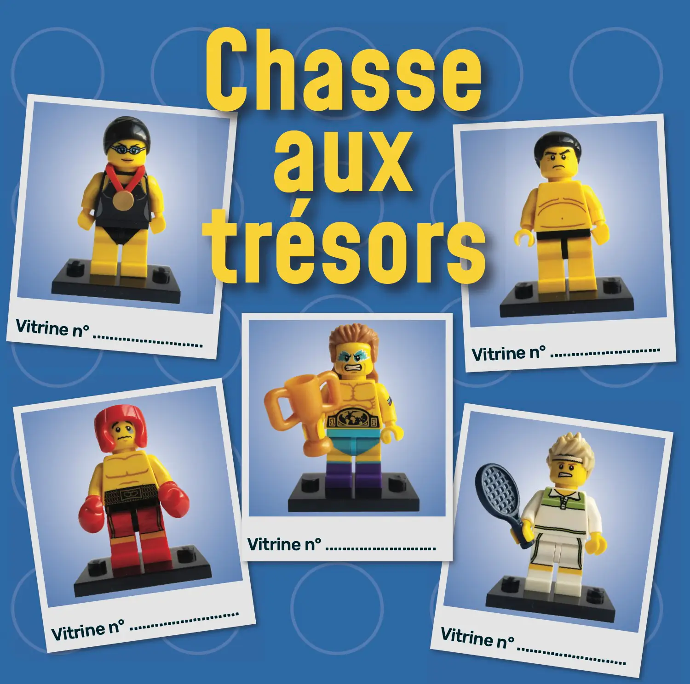
Rejoignez-nous !
Au cours de l'année, nous avions aussi pris le temps de publier le site du Brick Winter Burrow mais aussi de nous ouvrir aux réseaux sociaux, et en particulier à Instagram.
Avec ces nouveaux canaux de communication à notre disposition, nous étions vraiment heureux d'avoir pu raconter et publier notre histoire, ainsi que de nous ouvrir à un public encore plus large. Nous pensions que la "Cahors Bricks Expo 2024"12 était le moment parfait pour rendre public ce travail de fond.
Afin que les visiteurs puissent facilement accéder à ces ressources, nous avions créé deux affiches avec de simples QR codes.
{kind=link}
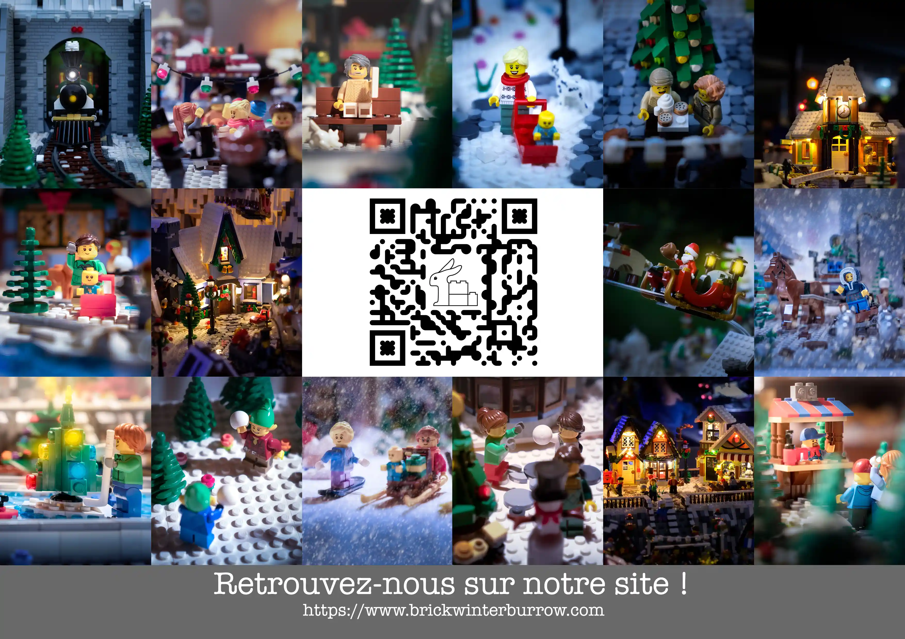
{kind=link}
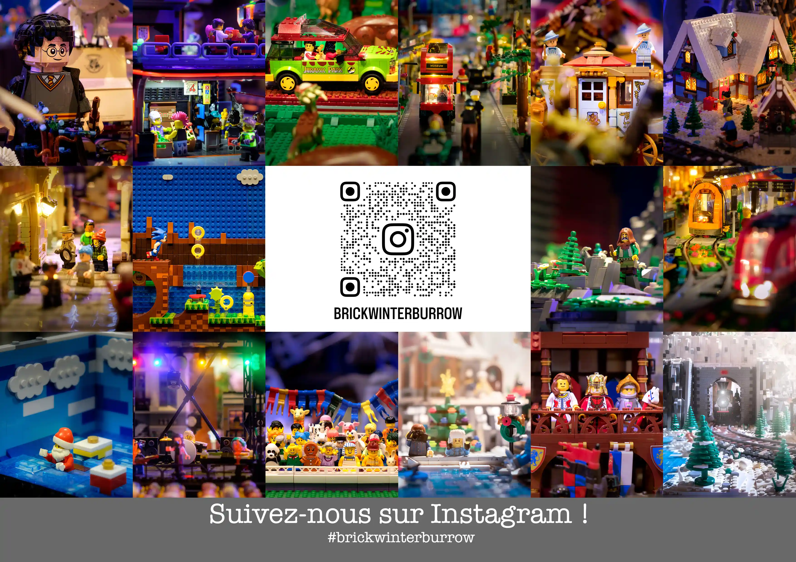
Top départ et inquiétudes
Vendredi 13 décembre 2024, le jour J venait d'arriver. Direction l'agence de location, puis retour à notre domicile pour le chargement du camion. En 1 heure, nous étions prêts. Pas de temps à perdre, cap vers Cahors.
Après quelques heures de route, nous sommes finalement arrivés dans la charmante ville de Cahors, à l'Espace Valentré. Face à lui se trouvait d'ailleurs le Pont Valentré, un édifice médiéval sublime.
{kind=link}
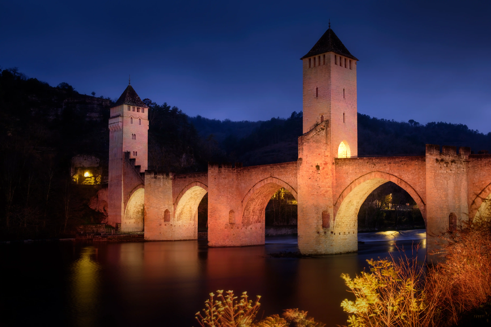
Rémi Basso était présent sur le parking devant la salle, prêt à accueillir les exposants. Nous pensions arriver aux alentours de 14h00, mais nous nous sommes installés à notre stand 2 heures plus tard. Malgré ce retard, nous faisions partie des premiers à arriver.
Une fois que nous avons salué nos collègues exposants, nous nous sommes attelés au montage de notre cher Terrier.
Nappe manquante
Pour cette deuxième exposition, nous étions moins nerveux qu'au cours de notre première. Nous savions comment procéder à un montage rapide et efficace.
En premier lieu, il nous fallait disposer notre plaque de contreplaqué pour avoir une surface parfaitement plane ; les deux tables à notre disposition n'étaient d'ailleurs pas alignées. Cette différence en hauteur aurait laissé de grandes fentes sur nos constructions, en particulier sur la montagne !
{kind=link}
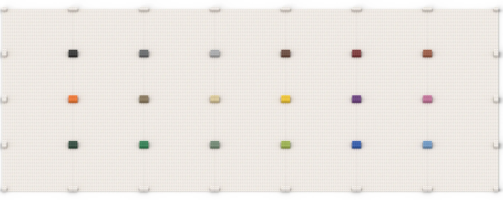
La suite consistait à placer nos modules du système Modular Integrated Landscaping System (MILS). Une fois notre plan sorti des cartons, nous connaissions les étapes à suivre. C'est à ce moment-là que nous nous sommes rendus compte de notre première erreur ; nous avions oublié notre nappe.
Notre amie Céline Autechaud, qui avait un stand dédié au thème de l'espace avec des modèles comme la "NASA Apollo Saturn V" (Set 21309) ou la "NASA Space Shuttle Discovery" (Set 10283), avait aussi, par chance, une nappe supplémentaire. De couleur rouge, nous étions ravis de la voir se marier avec le blanc de la neige de notre village.
{kind=link}
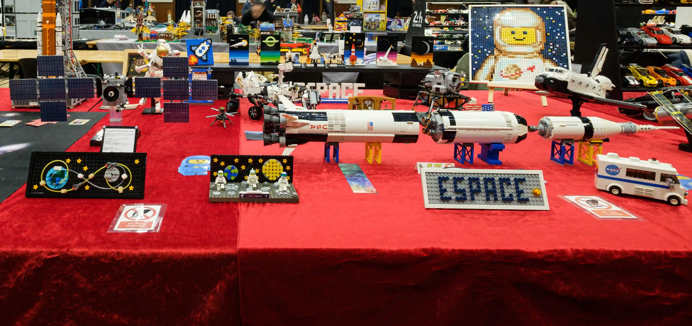
Montage gourmand en temps
Le deuxième point noir de notre Terrier, si on peut le nommer ainsi, était lié au montage. Avec le câblage récent des stands ainsi que des réverbères, sans oublier l'acquisition de nos nouvelles minifigs (cf. chapitre "Distance avec les briques" de la partie "Histoire du Terrier"), nous faisions face à un processus inexploré jusqu'alors.
Tout d'abord, l'électrification de l'entièreté de notre diorama a considérablement augmenté la quantité de câbles présent dans les modules MILS. Aussi, les connecteurs de la marque allemande WAGO que nous utilisions, bien pratiques pour réaliser des circuits électriques simples, n'étaient pas les plus efficaces pour une installation rapide.
{kind=link}
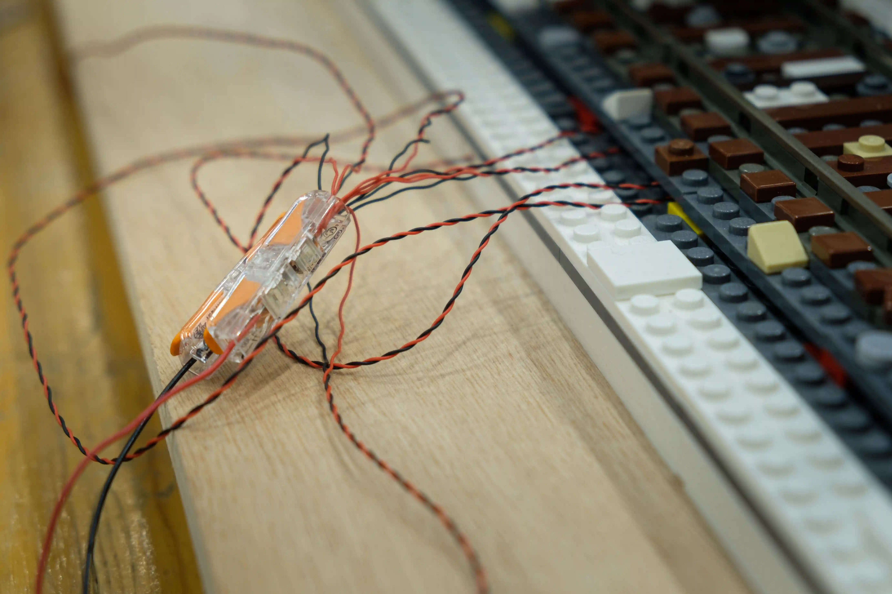
Ensuite, nos nouveaux habitants à têtes jaunes nous ont demandé quelques heures d'installation supplémentaires. Effectivement, entre les différents accessoires et les histoires inédites que nous voulions mettre en place, nous n'avons pas vu le temps passer. Ce n'est qu'à l'annonce du dîner prévu pour 20h00 par la Mairie de Cahors que nous avons réalisé qu'il nous avait fallu presque 4 heures d'installation au total sans interruption !
Même si le montage pour cette exposition s'est bien déroulé, nous savons désormais qu'il n'est pas viable pour d'autres évènements publics où le temps alloué à l'installation des stands est réduit. Pour ne citer qu'un exemple, pour "Des Briques pour le Téléthon"1, nous devions arriver le matin pour être prêts à l'ouverture du public à 14h00 le jour même (cf. article "Retour exposition : Des Briques pour le Téléthon 2023").
Quelques bonnes surprises
Malgré nos quelques frayeurs le vendredi, les deux jours suivants se sont déroulés à merveille. Que ce soit pour notre stand ou celui de nos exposants, nous étions ravis de voir les visiteurs émerveillés face aux créations réalisées en briques.
Le weekend a eu également son lot d'heureuses nouvelles !
Chasse aux minifigs populaire
Les 4 minifigs que nous avions placées dans notre village furent des moments de bonheur pour le public, en particulier les enfants. Tous ces personnages avaient soigneusement été disposés à des endroits stratégiques et avec un degré de difficulté différent.
Le "Grandma Visitor" (Minifig col112) de la "Series 7 Minifigures" et le "Penguin Boy" (Minifig col253) de la "Series 16 Minifigures" étaient respectivement dans notre forêt et notre patinoire. Enfants comme adultes les trouvaient rapidement.
{kind=link}
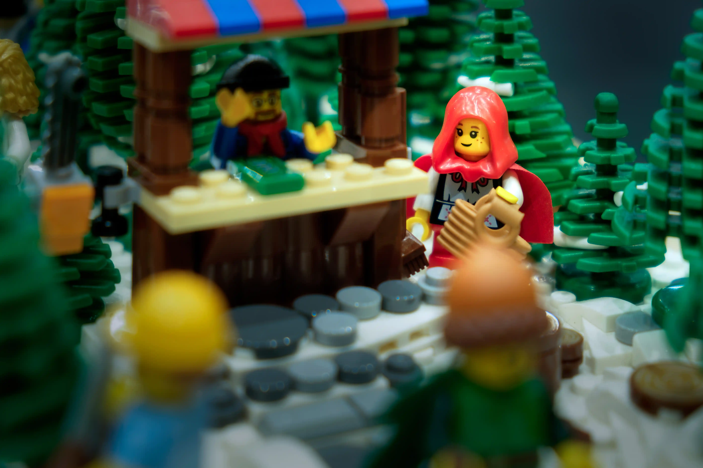
{kind=link}
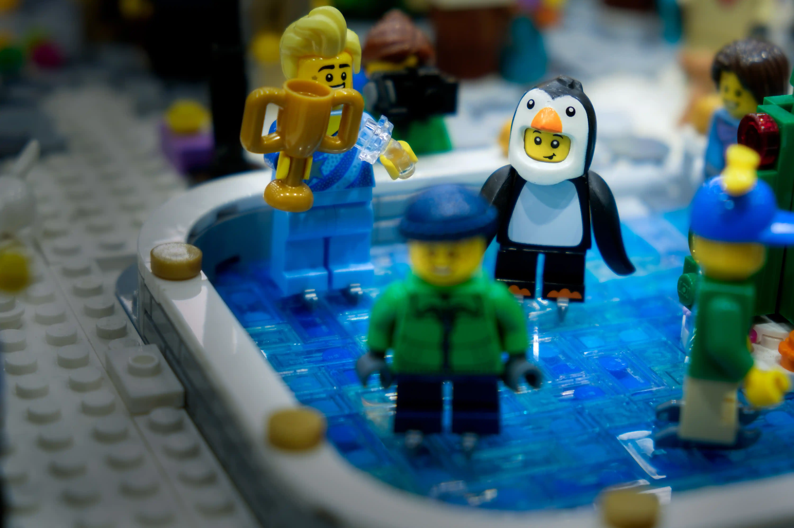
Pour le "Reindeer Costume" (Minifig col401) de la "Series 23 Minifigures", les choses commençaient à se corser ; placé au sommet de la montagne entre quelques elfes, les visiteurs les plus jeunes ne le voyaient pas immédiatement.
À l'inverse, le "Fairy Batman" (Minifig coltlbm03) de la "The LEGO Batman Movie Series" qui était dans le "Winter Village Market" (Set 10235) était invisible pour la plupart des adultes ! Nous répétions régulièrement "Il faut se mettre à la place d'un enfant pour le trouver".
{kind=link}
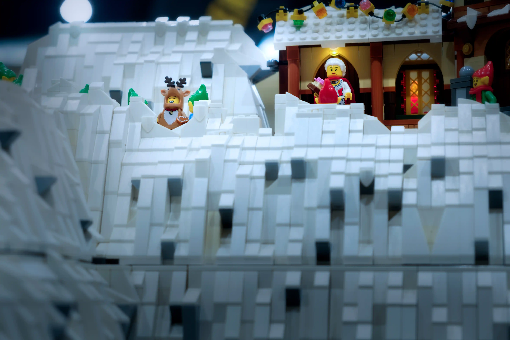
{kind=link}
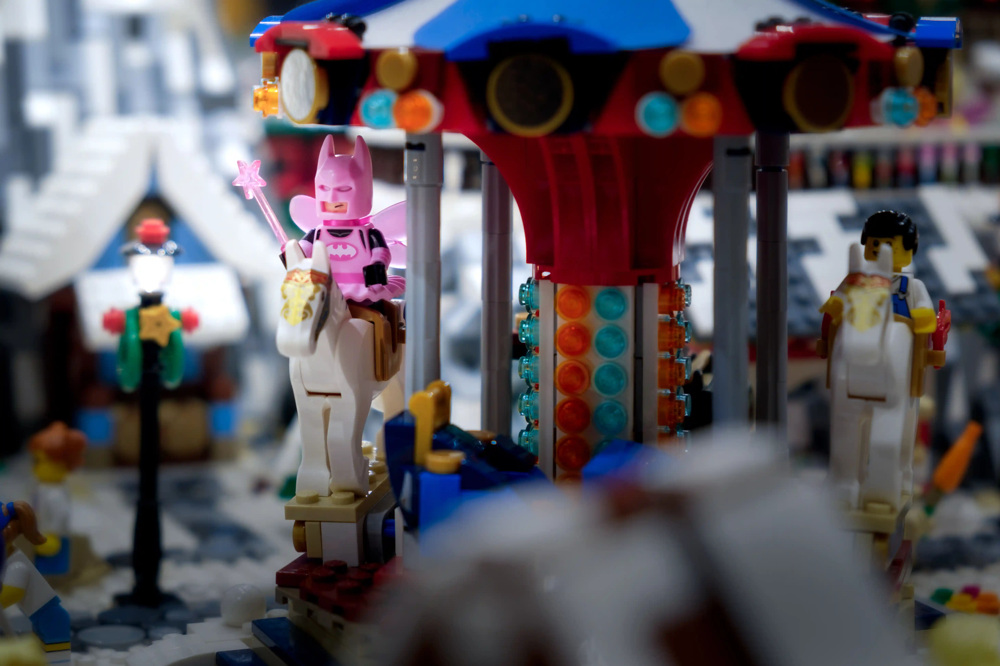
Nous étions vraiment comblés de ce petit jeu car il amusait les petits comme les grands. Nous pensons aussi qu'il permettait aux spectateurs de s'attarder sur notre diorama et d'explorer les détails que nous avions pris soin de mettre en place.
Derniers arrivants
Annoncé à la dernière minute par email, Geoffrey Marsollier serait présent avec un stand. Cette personne, qui n'est autre que le gérant de Frenchshop, une boutique BrickLink, disposait de plusieurs minifigs toutes plus belles les unes que les autres.
Nous avons cependant été séduits par la multitude d'animaux qu'il présentait et nous n'avons pas pu résister à l'acquisition des références suivantes :
- Le "Owl, Spread Wings" (Minifig
67632) - Le "Mini Toy Duck" (Minifig
49661) - Le "Dog, Labrador / Golden Retriever" (Minifig
73937) - Le "Dog, Terrier with Black Eyes" (Minifig
27981) - Le "Dog, French Bulldog" (Minifig
29602)
{kind=link}
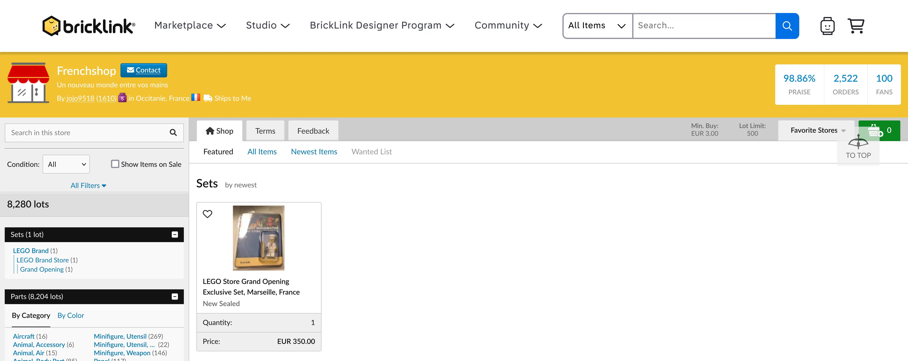
Comme si cela ne suffisait pas, notre ami Antoine qui nous a rendu visite, avait ramené avec lui une minifig représentant le super-héros Spider-Man. Cette dernière avait une particularité ; elle avait un charmant pull de Noël.
Pour être plus précis, il s'agissait du "Spider-Man - Christmas Sweater" (Minifig sh0905) qui se trouve dans le "Avengers Advent Calendar" (Set 76267), un calendrier de l'avent datant de septembre 202334.
{kind=link}
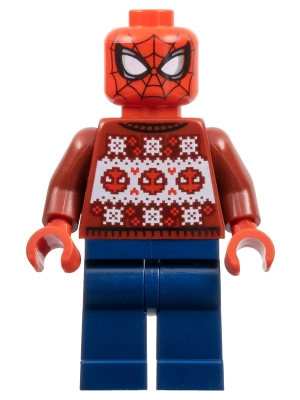
{kind=link}
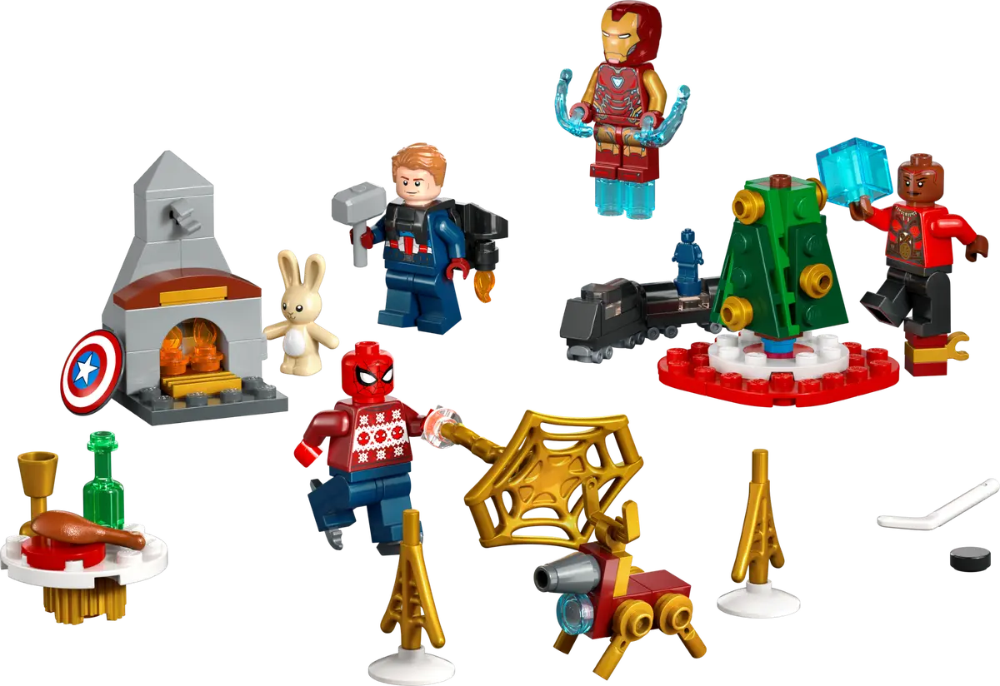
Nous l'avons au départ disposé au niveau de notre mairie, puis nous l'avons glissé à l'arrière de notre train.
Enfin, notre mère qui est elle aussi venue nous rendre visite avait réalisé des peluches en forme de lapin. Nous étions réellement touchés et trouvions que cette touche artisanale à côté des affiches pour notre compte Instagram ou notre site web était des plus belles !
{kind=link}
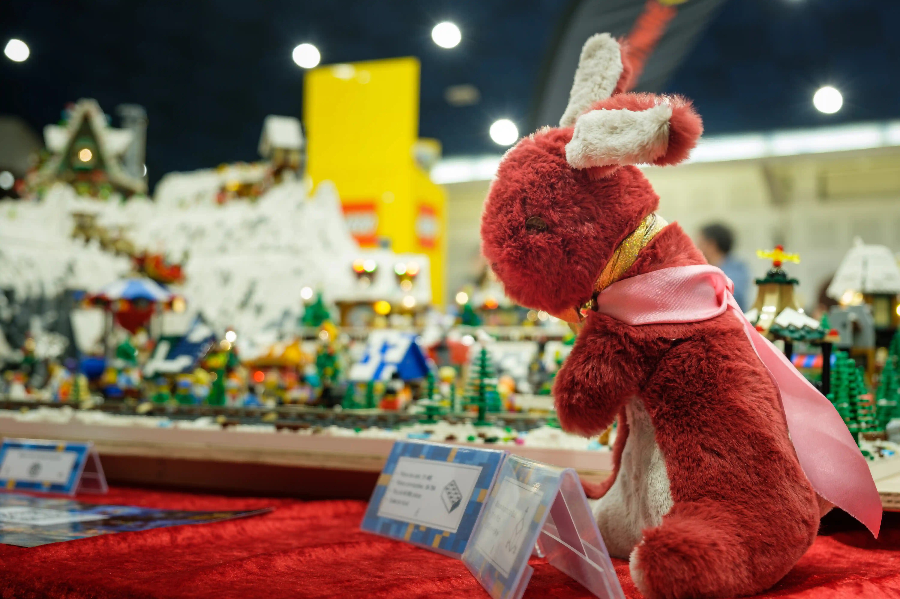
Un train fiable
La conversion de notre train au système 9V fut aussi un succès. Nous avions peur que la pièce "Electric, Train Motor 9V with Wheels" (Réf. 590) ne surchauffe à cause de son utilisation continue, mais ce ne fut pas le cas.
Contrairement à l'année dernière où notre train déraillait de nombreuses fois, sans doute à cause des frictions causées par les rails flexibles35 (i.e. la pièce "Train, Track Plastic (RC Trains) Flexible Segment" (Réf. 88492c00)), notre locomotive et les wagons qui la suivaient furent d'une très grande fiabilité.
{kind=link}
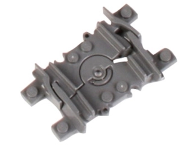
{kind=link}
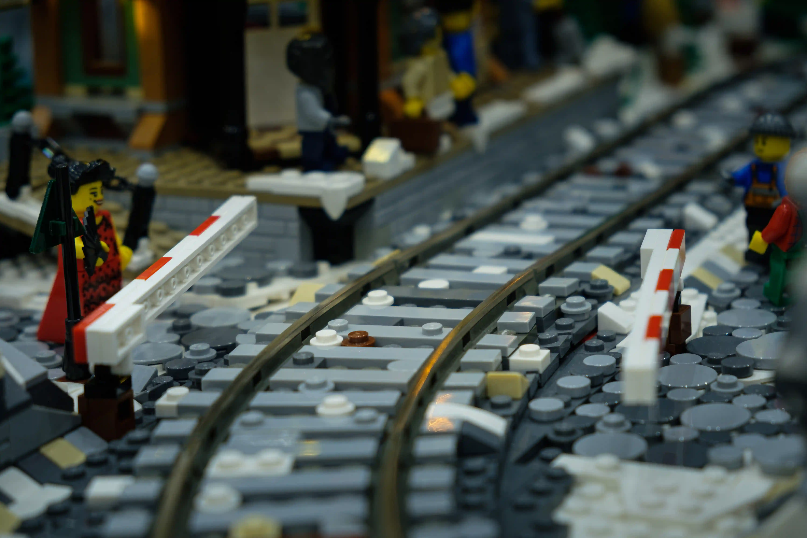
Les seuls accidents se sont comptés sur les doigts d'une seule main et furent tous causés par une main d'enfant inattentive. Rien de bien méchant !
Des moments forts
La "Cahors Bricks Expo 2024"12 fut aussi mémorable grâce à des évènements marquants.
Mosaïque de Cahors
Il y a tout d'abord eu la construction de la mosaïque, véritable animation du weekend. Avoisinant les 65 000 briques, cette œuvre était exposée sur la scène de l'Espace Valentré tout au long du weekend.
Cette photographie composée de briques LEGO représentait la cathédrale Saint-Etienne de Cahors, un monument vieux de plusieurs siècles37 et inscrite au patrimoine mondial de l'UNESCO depuis 199838.
{kind=link}
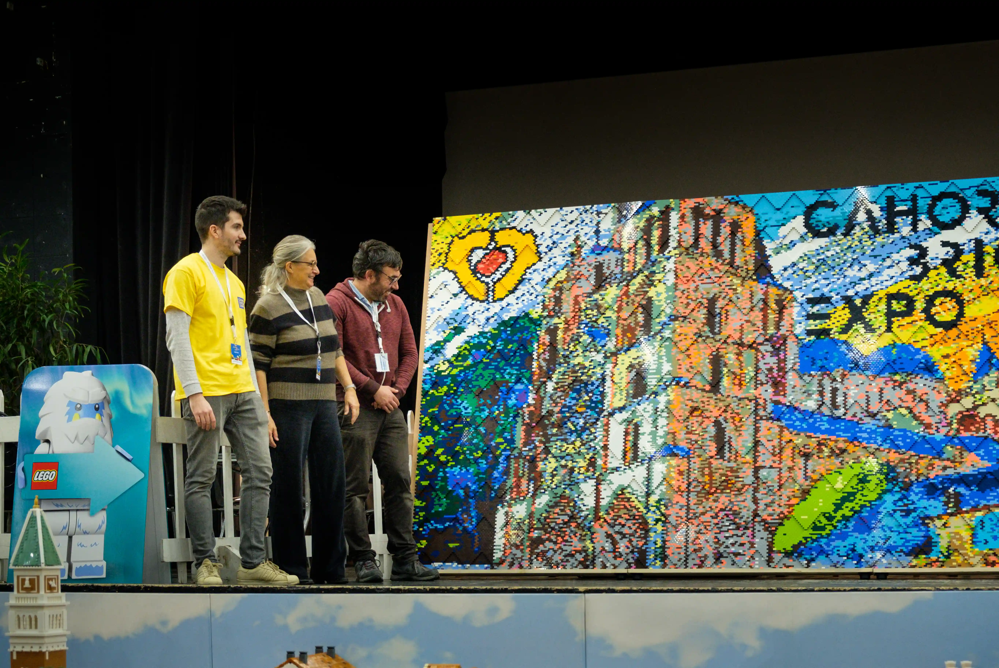
Diversité d'univers
Les stands de nos homologues étaient aussi marquants. Beaucoup de MOCs avaient été réalisés et la diversité des thèmes était séduisante. Nous évoquions quelques lignes plus haut Céline Autechaud et son stand ludique sur l'espace.
Pour ne citer que deux exemples supplémentaires, nous pensons au diorama du LEGO Master36 Aurélien Authiat qui avait pour inspiration l'univers Castle avec l'ajout subtil mais avisé du "Medieval Blacksmith" (Set 21325).
Plus proche de nous, notre voisin de table Frédéric Ravert avait remanié quelques sets du thème Ninjago pour en faire un diorama avec des scénettes toutes plus imaginatives les unes ques les autres.
{kind=link}
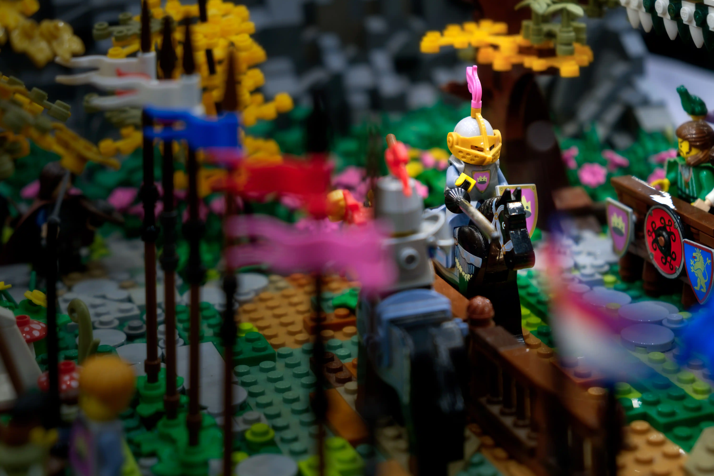
{kind=link}
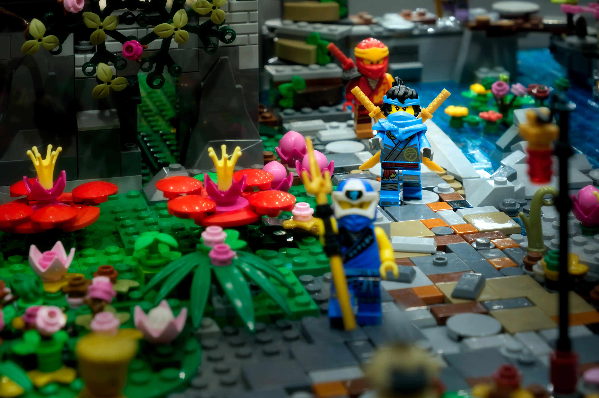
Scènes lumineuses
Enfin, comment ne pas évoquer les moments où l'Espace Valentré fut entièrement plongé dans l'obscurité ?
Tout comme durant l'exposition "Des Briques pour le Téléthon 2023"1, le personnel responsable de la salle avait coupé à quelques reprises les plafonniers durant le weekend. Le but étant, bien évidemment, de mettre en avant les dioramas illuminés.
{kind=link}
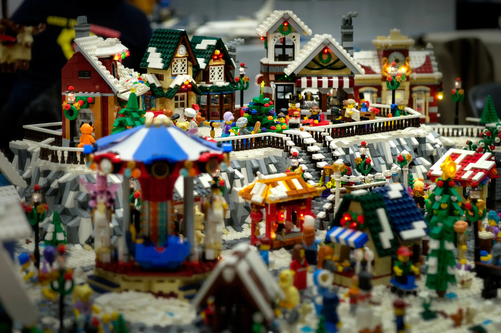
Nous l'évoquions quelques paragraphes plus haut, nous avions travaillé dur afin d'illuminer la totalité de notre diorama. Nous étions vraiment ravis du résultat, et encore plus en voyant les regards émerveillés du public ! Nous avions peur d'avoir des problèmes de piles mais, tout comme notre train, notre système fut d'une fiabilité redoutable.
Un évènement réussi
Alors que nous avoisinions les 17h00 dimanche, nous savions que la "Cahors Bricks Expo 2024"12 touchait à sa fin. La plupart des visiteurs avaient quitté l'Espace Valentré. Seuls quelques retardataires continuaient d'admirer les créations des uns et des autres, mais il était temps pour nous de démonter notre Terrier.
Une fois de plus, nous avions dû faire face aux caprices des connecteurs WAGO avec les fils électriques que nous avions dû entortiller pour réaliser des connections robustes. Cela nous a retardé et nous avons été confortés dans notre idée de revoir notre système de connexions.
{kind=link}
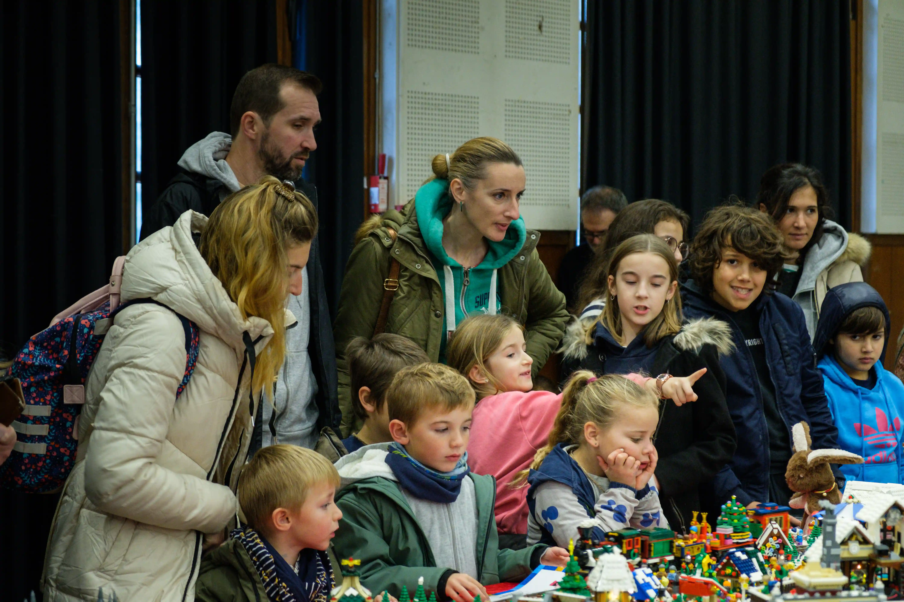
{kind=link}
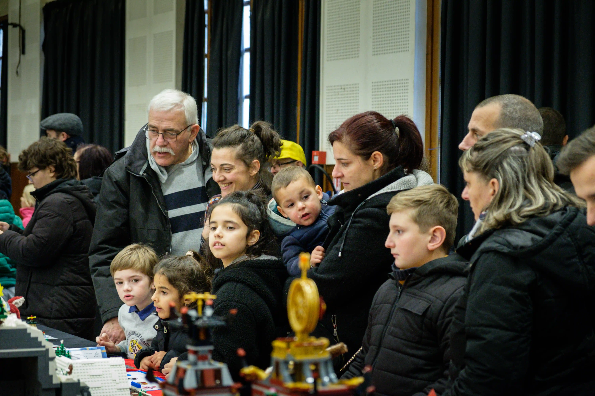
Malgré ça, les retours étaient plus que positifs, que ce soit sur notre diorama ou sur l'évènement en général. Rémi Basso nous avait d'ailleurs annoncé que le nombre de visiteurs serait important pour cette édition 2024. Nous apprendrons plus tard dans la presse qu'il ne s'était pas trompé ; la "Cahors Bricks Expo 2024"12 avait effectivement accueilli plus de 4 570 visiteurs39,40,41 !
Nous étions également heureux d'entendre les questions de certains curieux : "Comment la montagne a-t-elle été construite ?", "Comment avez-vous fait pour avoir un ensemble modulabe ?", "Le train est-il électrifié ?", etc.
Après réflexion, ces interrogations nous poussent à continuer d'agrémenter le site du Brick Winter Burrow avec des récits descriptifs et accessibles au grand public, comme la partie "Histoire du Terrier", ainsi que des chapitres plus poussés techniquement comme "Notre nomenclature" de la partie "À Propos".
Remerciements
L'entièreté de cet évènement fut incroyable et n'aurait pu exister sans la participation de nombreuses personnes. C'est la raison pour laquelle nous souhaitions les remercier.
Les AFOLs
Cette passion commune pour la brique qui nous anime est l'une des raisons de nos retrouvailles.
- Une grande partie des aventures du Brick Winter Burrow n'aurait pas été possible sans le soutien de la Brick Team Aquitaine. Nous les remercions sincèrement pour leur confiance, avec maintenant presque deux ans de collaboration.
- Pour la "Cahors Bricks Expo 2024"12, un remerciement tout particulier à Rémi Basso pour l'organisation de cet événement, son accueil chaleureux, le temps qu'il nous a accordé, ainsi que nos échanges enrichissants.
- Nous tenons également à remercier nos collègues exposants, à commencer par Céline Autechaud pour nous avoir prêté l'une de ses magnifiques nappes rouges. Un grand merci à Aurélien Authiat pour le prêt de son aspirateur CleanMyBricks, à Augustin Konieczny pour ses conseils avisés sur la fixation de notre montagne, et à Kévin Gremillet ainsi qu'à Baptiste "Vals" Valsesia pour leurs précieux conseils sur la Legography.
- Nous remercions aussi Thomas Boisseau pour ses compliments sur notre village et ses encouragements à rencontrer l'un de nos modèles, Alex "ALEX Winter Village" Lejeune.
- Un grand merci à nos voisins de stand, Frédéric Ravert et Guillaume Turlin, qui ont veillé sur notre Terrier pendant nos absences, ainsi qu'à tous les autres exposants : Marie-Laure, Denis, Franck, Marie, Didier et Renaud.
- Enfin, nous tenions à exprimer notre gratitude à Geoffrey Marsollier de la boutique BrickLink Frenchshop pour nous avoir offert un tarif avantageux pour l'achat de nos nouvelles minifigs.
{kind=link}
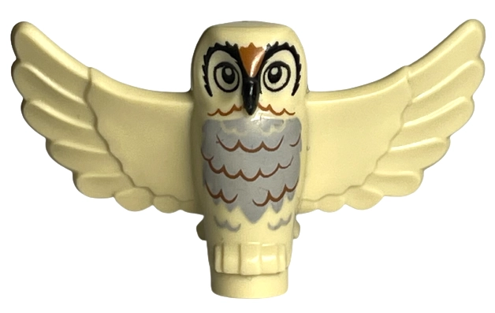
{kind=link}
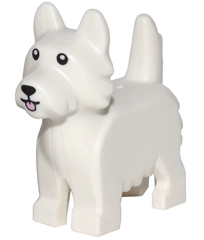
Les acteurs de la communication
Certains intervenants ont grandement contribué au succès de la "Cahors Bricks Expo 2024"12 :
- Tout d'abord, un grand merci à la Mairie de Cahors pour avoir mis à disposition l'Espace Valentré pour cet événement, ainsi qu'à l'auberge de jeunesse "Le Chai" pour son accueil chaleureux et son hospitalité exemplaire.
- Nous souhaitons également exprimer notre gratitude envers leurs partenaires33 : La Maison des Jeunes et de la Culture, Le Grand Palais, Le Portail du Geek, Le Petit Train de Cahors et ÔCahors.
- Nous tenons à remercier particulièrement deux membres de l'équipe communication de la ville de Cahors : Raphaël Alguacil pour avoir animé l'ensemble de l'événement, ainsi que Coryan Roux pour son aide précieuse et sa gentillesse.
- Enfin, un grand merci au journaliste Nicolas Guiraud du quotidien Charente Libre pour avoir généreusement partagé ses articles et nous avoir permis de les utiliser sur le site du Brick Winter Burrow.
Nos indefectibles soutiens
Nous souhaitions enfin remercier les personnes clés qui ont contribué à l'aventure de notre Terrier depuis ses débuts.
Il s'agit avant tout de nos parents, à qui nous exprimons notre profonde gratitude. Depuis la toute première brique posée jusqu'à la version la plus récente de notre diorama, ils nous ont soutenus dans ce projet ambitieux qu'est le Brick Winter Burrow. Leur aide nous est encore aujourd'hui précieuse.
- En particulier, notre mère, qui a réalisé de nombreux accessoires, tels que les peluches en forme de lapin mentionnées plus haut, ou encore les bonnets de Noël parfaitement ajustés à nos têtes.
- Quant à notre père, il a été un véritable pilier logistique, en nous assistant pour le transport et l'installation de notre œuvre, sans oublier ses compétences en électronique, grâce auxquelles nous avons pu illuminer notre Terrier.
Enfin, un remerciement spécial à notre ami Antoine, pour ses conseils avisés, ses suggestions, son MOC pour notre marché, ainsi que pour le "Spider-Man - Christmas Sweater" (Minifig sh0905). Ses visites régulières sur notre stand et tous ses gestes généreux continuent de nous toucher.
{kind=link}
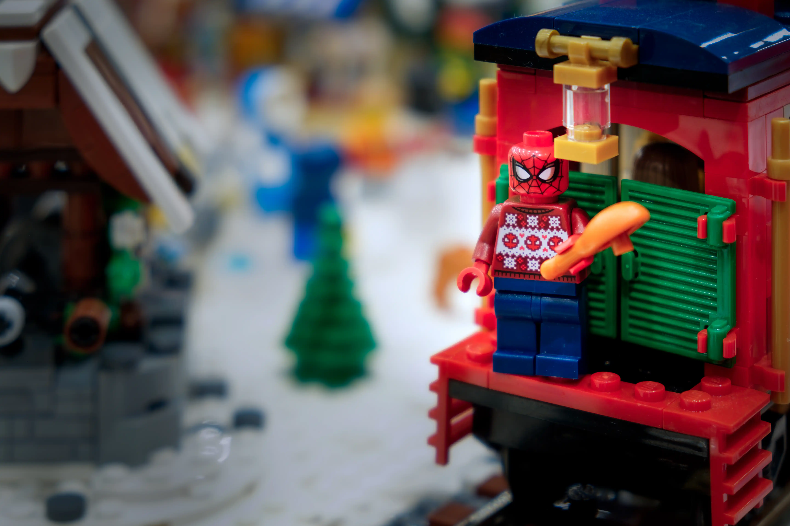
Sources
-
LEGO Ambassador Network: Des Briques pour le Téléthon 2023 (Archive) ↩↩↩↩↩↩↩
-
Charente Libre: Champniers, la grosse expo LEGO va renaître à l'espace Dambier ce week-end (Archive) ↩
-
Charente Libre: Champniers, l'expo LEGO a attiré plus de 1 300 visiteurs (Archive) ↩
-
Charente Libre: Seigneur des Anneaux, Star Wars, Harry Potter - 800 m² de constructions LEGO à admirer à Champniers (Archive) ↩
-
Charente Libre: Champniers - Les LEGO, vedettes du Téléthon (Archive) ↩
-
LEGO Ambassador Network: Des Briques pour le Téléthon 2024 (Archive) ↩↩
-
LEGO Ambassador Network: L'expo Super Géniale 2024 (Archive) ↩
-
Sud Ouest: Saujon - L'expo Super Géniale a ravi 1100 amateurs de LEGO (Archive) ↩
-
LEGO Ambassador Network: Cahors Bricks Expo 2024 (Archive) ↩↩↩↩↩↩↩↩
-
Facebook: Les membres du bureau de la Brick Team Aquitaine devant les boites de LEGO (Archive) ↩
-
La Dépêche: Mordu de LEGO, Rémi Basso organise la Cahors Bricks Expo (Archive) ↩
-
Actu Lot: La "Cahors Bricks Expo", un week-end consacré aux LEGO® à Cahors (Archive) ↩
-
La Dépêche: La Cahors Brick Expo débarque dans la ville en décembre pour une deuxième édition (Archive) ↩
-
LEGO Ambassador Network: Cahors Bricks Expo 2022 (Archive) ↩↩
-
LEGO Ambassador Network: Cahors Bricks Expo 2023 (Archive) ↩↩
-
Le Petit Journal: Affluence à Cahors Bricks Expo (Archive) ↩
-
Cahors Agglo: Plus de 4 000 visiteurs à la Cahors Bricks Expo (Archive) ↩
-
Medialot: La Cahors Bricks Expo 2023 met les LEGO® en scène à l'espace Valentré ce week-end ! (Archive) ↩
-
Medialot: Une belle fréquentation pour la Cahors Bricks Expo 2023 ! (Archive) ↩
-
Actu Lot: Cahors, la grande exposition LEGO® de retour en décembre 2023 (Archive) ↩
-
La Dépêche: Cahors - Des LEGO offerts au service pédiatrie de l'hôpital (Archive) ↩
-
Cahors, Ville et Agglo: Cahors Bricks Expo, 3e édition (Archive) ↩
-
Infolocale: Cahors Brick Expo - Animations à l'Espace Valentré (Archive) ↩
-
La Dépêche: 3e édition de la Cahors Bricks Expo - "On se transmet les briques de génération en génération !" (Archive) ↩
-
Medialot: Ce week-end, les LEGO® vont enchanter petits et grands aux 4 coins de la ville (Archive) ↩
-
BrickNerd: Making Trains Move - The History of LEGO Trains, Track, Motors and More (Archive) ↩
-
Reddit: What is the best LEGO train control system? (Archive) ↩
-
Dordogne Libre: Deux Périgourdins à l'assaut de LEGO Masters (Archive) ↩
-
Cahors - Vallée du Lot: La Cathédrale Saint-Étienne de Cahors (Archive) ↩
-
La Dépêche: 4 578 visiteurs pour la troisième édition de Cahors Bricks Expo (Archive) ↩
-
Medialot: 4 578 visiteurs pour la 3ème édition de Cahors Bricks Expo (Archive) ↩
-
Actu Lot: Les LEGO® font un carton, affluence record pour la Cahors Bricks Expo (Archive) ↩